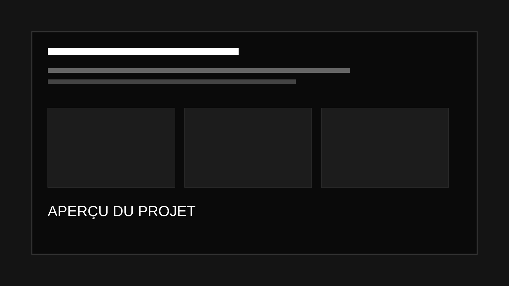

Réalisations
Mes projets
Retrouvez ici l'ensemble de mes réalisations. Chaque projet dispose de sa propre page détaillée.

Création et maintenance de sites internet
Refonte de sites WordPress, intégration de contenus, amélioration du SEO et maintenance proactive.
Compétences : Patrimoine · Incidents · Mode projet · Service
Voir le projet →
Infrastructure réseau
Mise en place et documentation d'une infrastructure réseau.
Compétences : Patrimoine · Incidents · Services
Voir le projet →
Application de gestion de cinéma
Application C# Windows Forms pour gérer les films, les genres, les salles et les projections.
Compétences : Incidents · Présence en ligne · Mode projet · Service · Développement professionnel
Voir le projet →